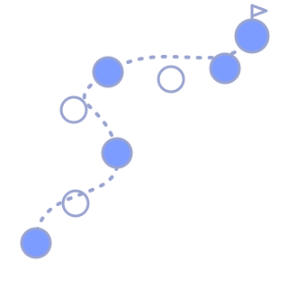

⚡ Reto relámpago
Racha: 0 respuestas correctas
Repaso integral 2026 · 3DS·A · INDEL
Fichas verificadas, buscador, quiz y retos para repasar cada módulo a tu ritmo.
0 de 0 módulos repasados · Aún sin insignia: abre una ficha y empieza.
🎉 ¡100 %! Repasaste todos los módulos del año.

Ponte a prueba con desafíos rápidos. Cada ronda elige una pregunta de los módulos.
Racha: 0 respuestas correctas
Lee la pista y elige el concepto correcto.
Portal académico de repaso. Fichas elaboradas para repasar los aprendizajes de 3.º Bachillerato Técnico Vocacional en Desarrollo de Software «A».